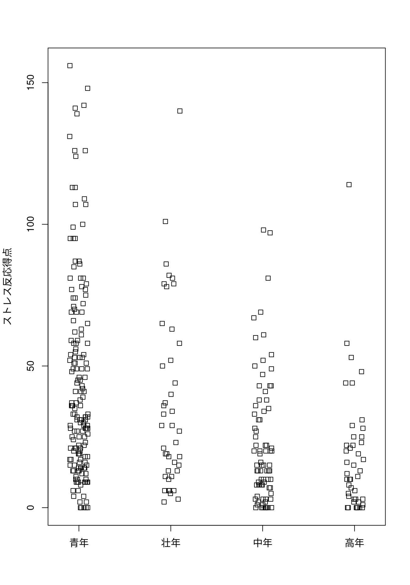

※本ページの内容はテキストの第５章に相当します
本章ではひとつのデータ（一次元データ）に対する記述統計に関して学びます。
本章ではRcmdrで実行した場合のコードと出力結果のみを記載し、手順の記載は省略しますので詳細はテキストを参照してください。
データの読み込み（P55-P56の手順の読み替え）
前章で説明したようにRcmdrのバグを回避するために第3回の公開資料フォルダにアップロードしてある「外来患者ストレスSub.RData」ファイルを使います。必ずこのファイルを使用してください。
- Rcmdrのメニューから［データ］-［データセットのロード…］を実行する
- ファイルダイアログで「
外来患者ストレスSub.RData」ファイルを選択する - アクティブデータセットが
PatientStressSubになっていることを確認する
5.1 量的変数のグラフ表現（P56-）
5.1.1 インデックスプロット（P56-P59）
グラフ - インデックスプロット
RcmdrMisc::indexplot(PatientStressSub[,'ストレス反応得点', drop=FALSE],
type='h', id.method='y', id.n=2,
groups=PatientStressSub$性別)[1] 13 310グラフ - インデックスプロット
RcmdrMisc::indexplot(PatientStressSub[,'ストレス反応得点', drop=FALSE],
type='p', id.method='y', id.n=2,
groups=PatientStressSub$性別)[1] 13 3105.1.2 ドットプロット（P60-P61）
5.1.3 ドットチャート（P62-63）
グラフ - ドットチャート
# 積み重ね
stripchart(ストレス反応得点 ~ 年齢区分, vertical=TRUE, method="stack",
ylab="ストレス反応得点", data=PatientStressSub)
# すこしずらす
stripchart(ストレス反応得点 ~ 年齢区分, vertical=TRUE, method="jitter",
ylab="ストレス反応得点", data=PatientStressSub)
グラフ - ドットチャート
stripchart(ストレス反応得点 ~ 年齢区分, vertical=TRUE,
ylab="ストレス反応得点", data=PatientStressSub)5.1.4 離散数値変数のプロット（P64-P66）
グラフ - 離散数値変数のプロット
with(PatientStressSub, RcmdrMisc::discretePlot(ストレッサー得点,
by=性別, scale="percent"))5.1.5 ヒストグラム（P66-P70）
5.1.6 密度推定（P71-P74）
グラフ - 密度推定
car::densityPlot( ~ ストレス反応得点, data=PatientStressSub,
bw=bw.SJ, adjust=1, kernel=dnorm, method="adaptive")5.1.7 観葉表示（P74-78）
1 | 2: represents 12
leaf unit: 1
n: 337
42 0* | 000000000000000000001112222222333333334444
72 0. | 555666666667778888888999999999
108 1* | 000000000001111222333333333333344444
137 1. | 55555555566666777788889999999
164 2* | 000000000111111122222223334
(25) 2. | 5555556777778888888999999
148 3* | 001111111122223333344
127 3. | 556666667778889
112 4* | 01111233334444
98 4. | 556678899999
86 5* | 001112223333444
71 5. | 568888899
62 6* | 011233
56 6. | 55679999
48 7* | 01244
43 7. | 57788999
35 8* | 111112
29 8. | 56677
9* |
24 9. | 555789
18 10* | 01
16 10. | 779
13 11* | 334
HI: 124 126 126 131 139 140 141 142 148 1565.1.8 箱ひげ図（P78-P81）
5.1.9 平均値プロット（P81-P87）
5.1.10 QQプロット（P87-P91）
ストレス反応の4グラフ
# ドットチャート
with(PatientStressSub, RcmdrMisc::Dotplot(ストレス反応, bin=FALSE))
# ヒストグラム
with(PatientStressSub, RcmdrMisc::Hist(ストレス反応, scale="frequency",
breaks="Sturges", col="darkgray"))
# 密度推定
car::densityPlot( ~ ストレス反応, data=PatientStressSub, bw=bw.SJ, adjust=1,
kernel=dnorm, method="adaptive")
# QQプロット
with(PatientStressSub,
car::qqPlot(ストレス反応, dist="norm",
id=list(method="y", n=0, labels=rownames(PatientStressSub))))5.2 質的データのグラフ表現（P91-）
5.2.1 棒グラフ（P92-P94）
グラフ - 棒グラフ
with(PatientStressSub,
RcmdrMisc::Barplot(性別, xlab="性別", ylab="Frequency", label.bars=TRUE))
with(PatientStressSub,
RcmdrMisc::Barplot(性別, by=年齢区分, style="divided",
legend.pos="topleft", xlab="性別", ylab="Frequency",
label.bars=TRUE))
with(PatientStressSub,
RcmdrMisc::Barplot(性別, by=年齢区分, style="parallel",
legend.pos="topleft", xlab="性別", ylab="Frequency",
label.bars=TRUE))5.2.2 円グラフ（P94-P97）
グラフ - 棒グラフ
with(PatientStressSub,
RcmdrMisc::piechart(年齢区分, xlab="", ylab="", main="年齢区分",
col=colorspace::rainbow_hcl(4), scale="percent"))
円グラフの始点を変更する
Rcmdrの円グラフはRcmdrMisc::pichart()関数を利用しており、その定義は下記の通りです。
x: a factor or other discrete variable; the segments of the pie correspond to the unique values (levels) of x and are proportional to the frequency counts in the various levels.scale: parenthetical numbers to add to the pie-segment labels; the default is “percent”.col: colors for the segments; the default is provided by the rainbow_hcl function in the colorspace package....: further arguments to be passed to pie.
円グラフの始点に関するパラメータはありませんが、...の部分でpie()関数へ渡すパラメータを指定できることがわかります。pie()関数の定義は
となっておりヘルプを見るとinit.angleパラメータを指定すれば始点を変更できることがわかります。
init.angle: number specifying the starting angle (in degrees) for the slices. Defaults to 0 (i.e., ‘3 o’clock’) unless clockwise is true where init.angle defaults to 90 (degrees), (i.e., ‘12 o’clock’).
init.angleの定義からclockwise = TRUEを指定することで始点を12時に変更できることがわかります。
Code
with(PatientStressSub,
RcmdrMisc::piechart(年齢区分, xlab="", ylab="", main="年齢区分",
col=colorspace::rainbow_hcl(4), scale="percent",
clockwise=TRUE))5.2.3 複数のグラフを並べて描画
（省略）
5.3 数値による要約（P97-）
5.3.1 すべての変数についての数値による要約（P97-99）
統計量 - 要約 - アクティブデータセット
summary(PatientStressSub) 性別 年齢 ストレッサー得点 日常苛立ちごと 健康統制感
男:119 Min. :15.00 Min. : 0.000 Min. : 0.000 Min. : 58.00
女:218 1st Qu.:19.00 1st Qu.: 5.000 1st Qu.: 0.000 1st Qu.: 83.00
Median :24.00 Median : 7.000 Median : 1.000 Median : 92.00
Mean :36.13 Mean : 7.303 Mean : 2.896 Mean : 91.46
3rd Qu.:52.00 3rd Qu.: 9.000 3rd Qu.: 4.000 3rd Qu.:101.00
Max. :87.00 Max. :16.000 Max. :25.000 Max. :138.00
ストレス反応得点 ノンコンプライアンス行動数 年齢区分 ストレス反応
Min. : 0.0 Min. :0.0000 青年:171 Min. : 0.000
1st Qu.: 11.0 1st Qu.:0.0000 壮年: 43 1st Qu.: 3.317
Median : 25.0 Median :0.0000 中年: 79 Median : 5.000
Mean : 34.9 Mean :0.6083 高年: 44 Mean : 5.219
3rd Qu.: 50.0 3rd Qu.:1.0000 3rd Qu.: 7.071
Max. :156.0 Max. :4.0000 Max. :12.490
Rcmdrのバグ
R Commanderにバグがあるため変数の数が10を超えるデータセットに対してこの操作を実行した場合、エラーが表示されてRcmdrがフリーズすることがあります。テキストP99の注釈参照方。
5.3.2 量的データの数値による要約（P99-P103）
統計量 - 要約 - 数値による要約
RcmdrMisc::numSummary(PatientStressSub[,c("ストレス反応得点",
"ストレッサー得点"), drop=FALSE],
groups=PatientStressSub$性別,
statistics=c("mean", "sd", "quantiles", "CV"),
quantiles=c(0,.25,.5,.75,1))
Variable: ストレス反応得点
mean sd IQR 0% 25% 50% 75% 100% n
男 26.63866 26.30001 29.50 0 9 19 38.50 113 119
女 39.40826 34.31023 40.75 0 14 31 54.75 156 218
Variable: ストレッサー得点
mean sd IQR 0% 25% 50% 75% 100% n
男 7.386555 2.940394 4 1 5 7 9 15 119
女 7.256881 3.113531 4 0 5 7 9 16 218統計量 - 要約 - 層別の統計量
car::Tapply(ストレス反応得点 ~ 性別 + 年齢区分, mean, na.action=na.omit,
data=PatientStressSub) 年齢区分
性別 青年 壮年 中年 高年
男 35.56000 26.15789 20.81250 12.72222
女 48.09091 44.70833 24.34043 21.346155.3.3 質的データの度数分布および適合度検定（P104-P107）
統計量 - 要約 - 頻度分布（カイ二乗検定あり）
counts:
性別
男 女
119 218
percentages:
性別
男 女
35.31 64.69
Chi-squared test for given probabilities
data: .Table
X-squared = 29.083, df = 1, p-value = 6.934e-085.4 正規性の検定（P107-P111）
正規性の検定で用いられることが多いシャピロウィルク検定の帰無仮説は
母集団は正規分布である
であることに留意してください。
グラフ - QQプロット/統計量 - 要約 - 正規性の検定
# QQプロット
with(PatientStressSub,
car::qqPlot(健康統制感, dist="norm",
id=list(method="y", n=0, labels=rownames(PatientStressSub))))
# 正規性の検定
RcmdrMisc::normalityTest(~健康統制感, test="shapiro.test",
data=PatientStressSub)
Shapiro-Wilk normality test
data: 健康統制感
W = 0.99445, p-value = 0.261グラフ - QQプロット/統計量 - 要約 - 正規性の検定
# QQプロット
with(PatientStressSub,
car::qqPlot(健康統制感, dist="norm",
id=list(method="y", n=0, labels=rownames(PatientStressSub)),
groups=性別))
# 正規性の検定
RcmdrMisc::normalityTest(健康統制感 ~ 性別, test="shapiro.test",
data=PatientStressSub)
--------
性別 = 男
Shapiro-Wilk normality test
data: 健康統制感
W = 0.98277, p-value = 0.132
--------
性別 = 女
Shapiro-Wilk normality test
data: 健康統制感
W = 0.99475, p-value = 0.6516
--------
p-values adjusted by the Holm method:
unadjusted adjusted
男 0.13205 0.2641
女 0.65160 0.6516